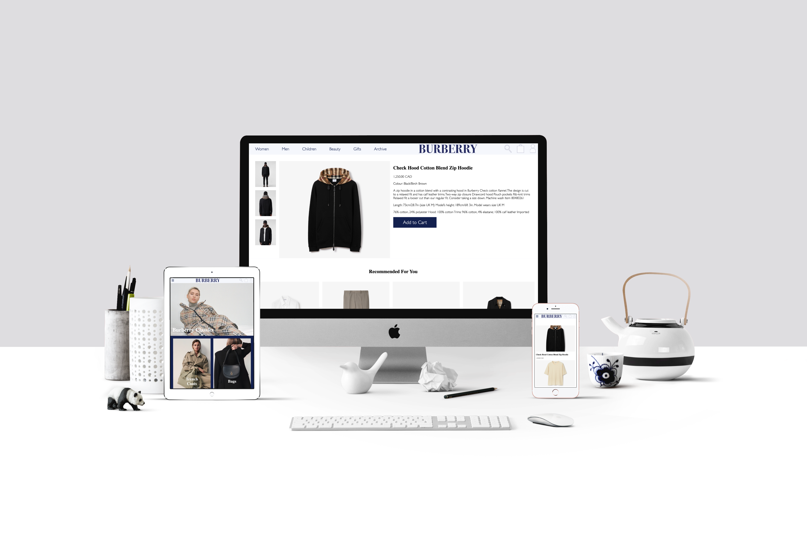

Burberry Website Redesign
For this project, I had gone through the Burberry website to see what aspects of the design could be changed, and noted them down. I then created wireframes for the layout of the redesign, and what it would look like on a phone as well. I then coded the redesign into an actual website, with HTML, CSS, and javascript for any CMS content.

